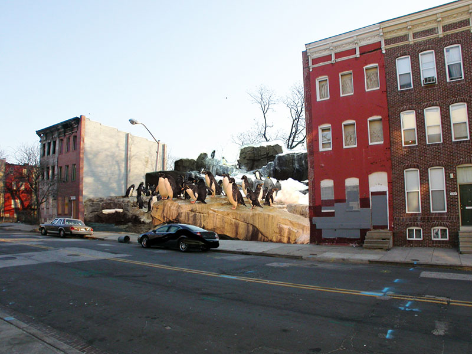

This is my sidebar.
Before aka Home.
During.
After.

I cropped a few penguins and their accompanying rocks out of their natural habitat using the magic lasso tool.
I pasted the penguins into the Baltimore picture. I aligned the penguins with the lay of the road and the buildings to make them look natural.
I made sure the edges of the penguin picture were clean. Then I flattened the layers and saved the image! Yay! Now go celebrate by posting about it on your Twitter!